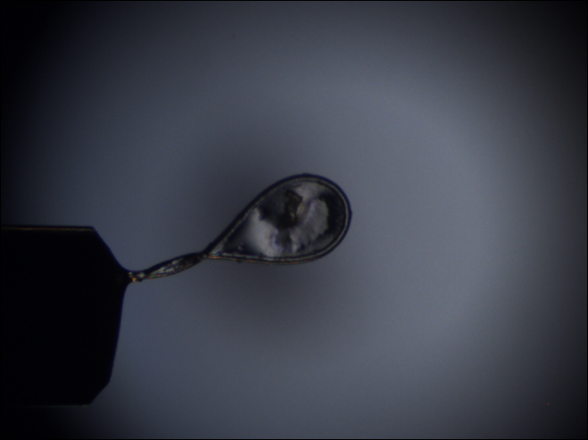

Introduction to LµCID library¶

The LUCID library (Loops and “Micro” Crytals IDentifier) provides some tools and methods for specific image processing tasks.
It was created to work on loops and crystals on beem lines.
Two feature has been implemented yet:
- Tools for loop centering
- Tools for bounding box generation for loop meshing